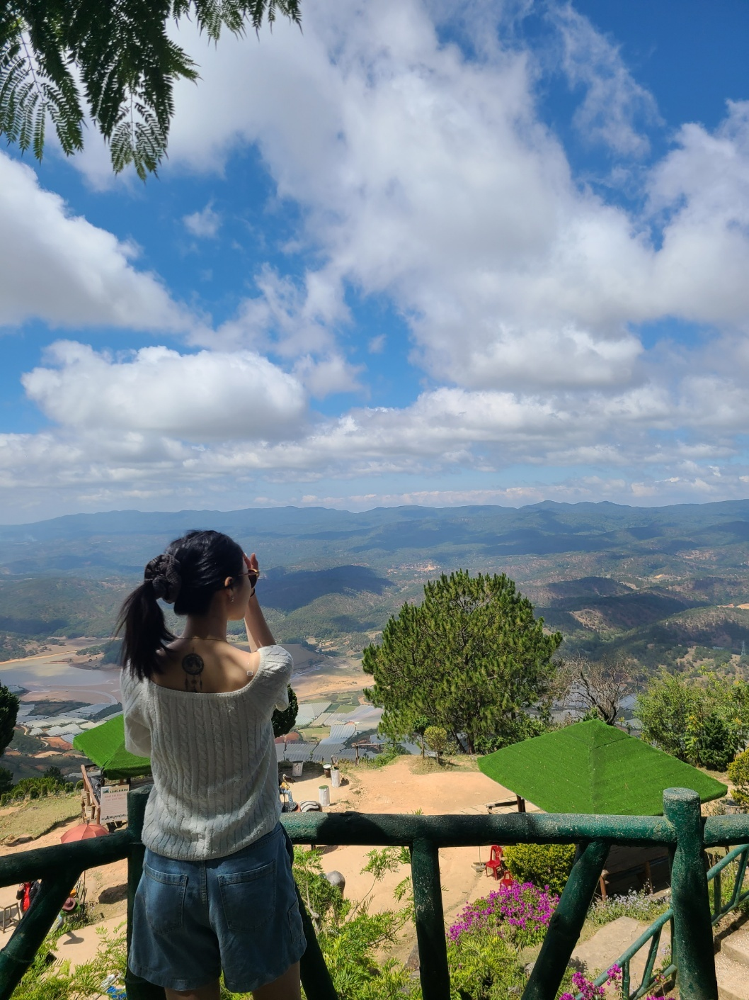
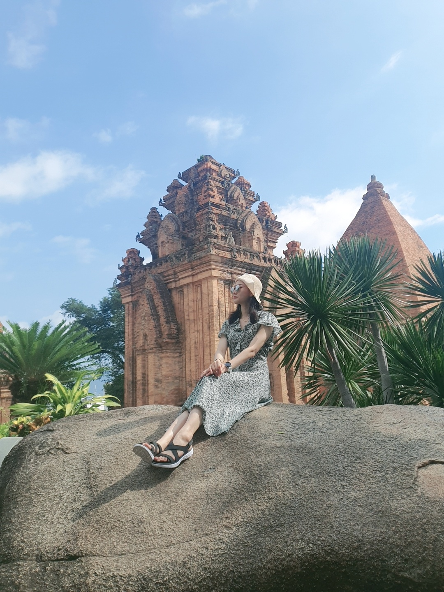
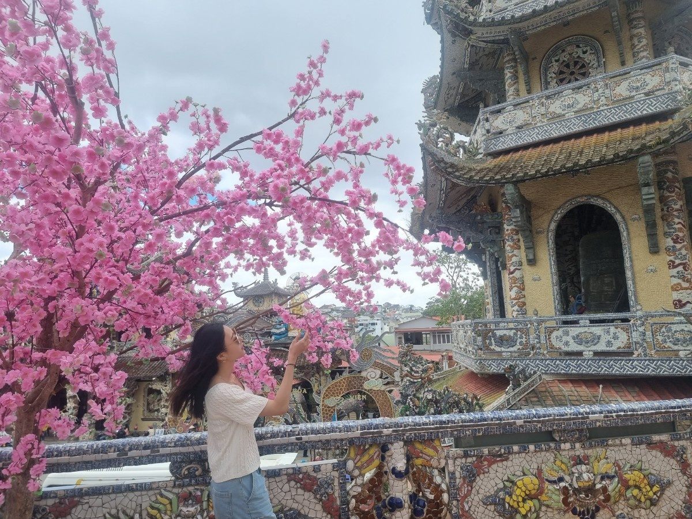

베트남

베트남 달랏
달랏이라는 이름은 라틴어: Dat Aliis Laetitiam AliisTemperiem→"어떤 이에게는 즐거움을, 어떤 이에게는 신선함을"에서
왔다는 설이 있으며, 프랑스 식민지 정부가 달랏(Đà Lạt)이라는 이름을
정식으로 사용하였으나 실제로는 현지 소수민족인 랏족이 부르던
이름이다. 베트남에서 달랏은 인기있는 관광 목적지이며, 노보텔
달랏과 소피텔 달랏이 자리잡고 있는 곳이다. 소피텔 달랏은 본래
1922년에 지어진 달랏 왕궁이었다. 달랏의 특징적인 광경은 우거진
소나무 숲과 그 사이로 난 오솔길이며, 겨울에는 트리메리골드가
피어난다. 일년 내내 잦은 안개도 이 도시의 특징 중의 하나이다.
달랏은 생명공학과 핵물리학 분야의 과학 연구 지역으로도 명성이
높다. 고원 지대답게 서늘한 날씨가 일년 내내 이어지며, 배추류나
화훼류, 고구마, 장미 등이 경작된다.


